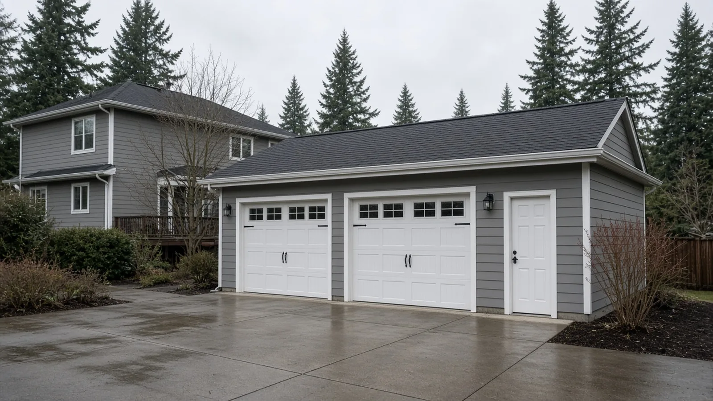
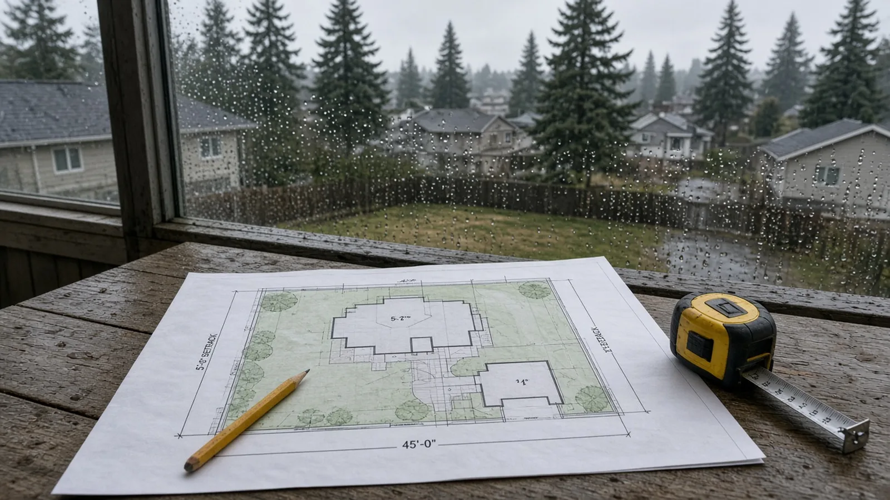
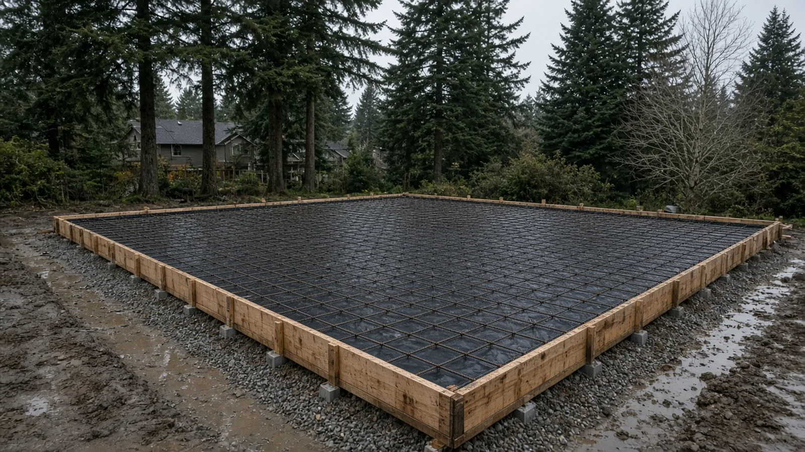
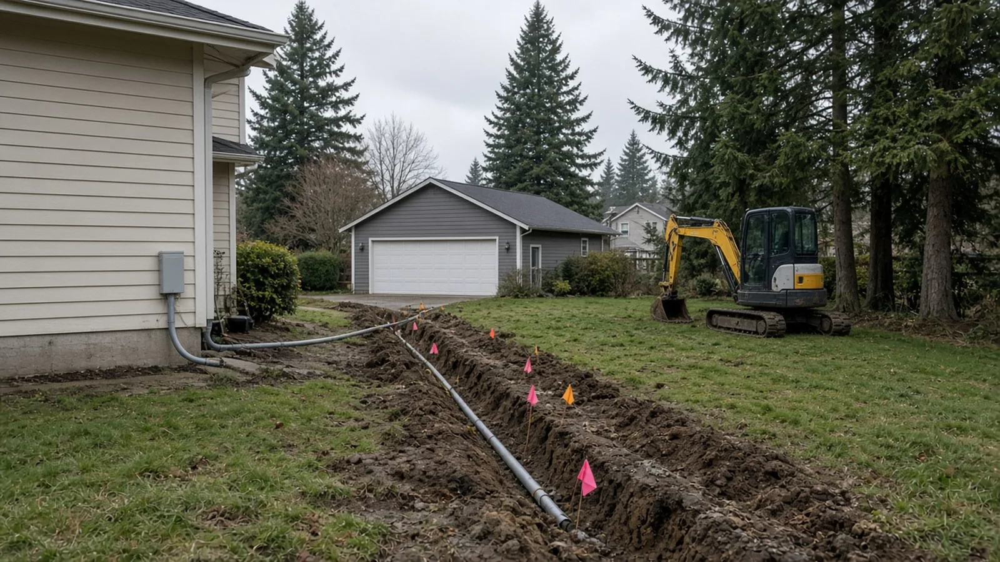
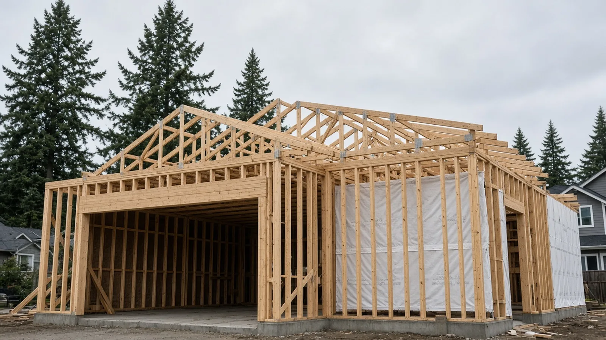
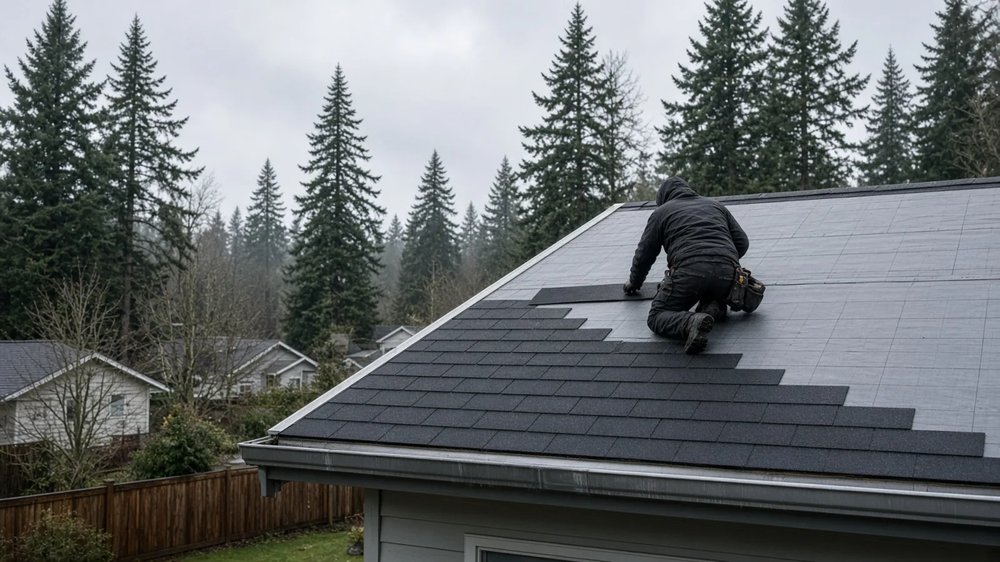
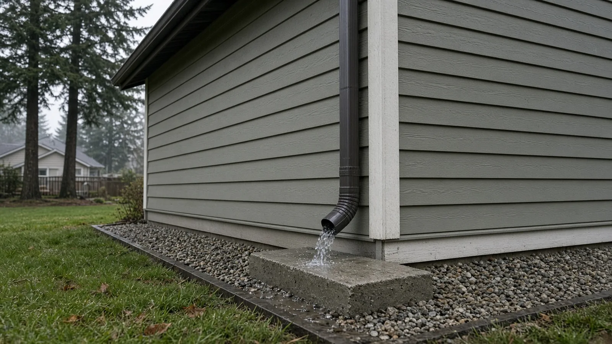
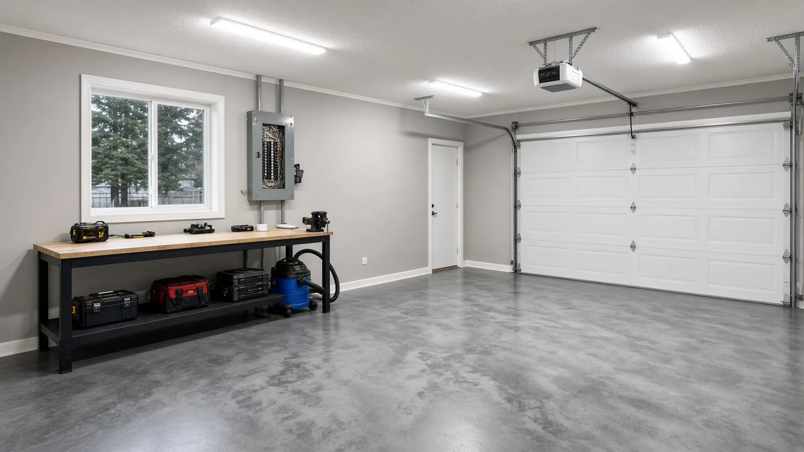
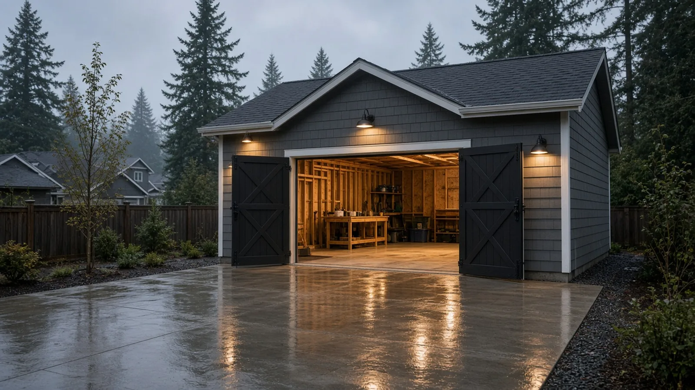

Detached Garage Marysville WA — Permits, Setbacks, Foundations, Power and Building It Right
By Board of Project Stewardship Editorial
Key Takeaways
- A detached garage in Marysville needs a City building permit. The City's Exempted Work list only exempts one-story detached accessory buildings used as tool and storage sheds, playhouses and similar uses with a floor area of no more than 120 square feet, and even those must meet the setbacks in Marysville Municipal Code (MMC) 22C.180. Applications go through the City's online Permit Portal, which lists an "Outbuilding" residential permit type.
- Setbacks, height and size come from MMC 22C.180. The accessory structures chapter sets a 5-foot side setback, a 5-foot rear setback for a one-story structure (more when the entrance faces the rear yard or an alley, or for two stories), a 20-foot height limit on lots under one acre, and a footprint limit of 80 percent of the house's footprint on lots under one acre.
- Power is two approvals, not one. Snohomish County PUD needs its New Service Questionnaire if you are installing or modifying electrical service, and Marysville processes its own electrical permits; L&I's list of cities that issue their own electrical permits includes Marysville.
Why Marysville homeowners build detached garages
Many Marysville homes were built with a one-car garage, a carport or a garage that has since become storage, a gym or a hobby space. A detached garage is a common way to get covered parking, a real workshop and storage back without cutting into the house. It is also one of the projects where small decisions made early, like where the building sits on the lot, which way the door faces and how the power gets there, decide how smoothly the permit and the build go.
This guide is Marysville-specific. It is tied to the City of Marysville, Snohomish County PUD and Washington State pages read on November 24, 2026. If you are thinking about turning an existing garage into living space instead, the Board of Project Stewardship's garage conversion guide for Everett covers that path, and the backyard shed and home office guide for Sammamish covers smaller outbuildings. Treat everything here as a map of the questions to ask, not as a substitute for the code or the City's answer about your parcel.
Do you need a permit? What Marysville's exemption list actually says
Marysville Municipal Code chapter 16.04 adopts the building codes and amends Section 105 of the 2021 International Building Code and 2021 International Residential Code, which is the list of work exempt from permits. The City's one-page Exempted Work handout, from the Community Development Department, says no building may be erected, enlarged or altered without a permit from the building official except for the listed items. The first item is the one homeowners ask about most:
- One-story detached accessory buildings used as tool and storage sheds, playhouses and similar uses, provided the floor area does not exceed 120 square feet and the structure does not encroach into the required yard areas.
- Those exempt structures are still required to meet setbacks per MMC 22C.180.
- Separate plumbing, electrical and mechanical permits may be required even for exempt items.
A garage you can park a car in is well past 120 square feet, so plan on a building permit. The handout also lists the City's number for permit questions, 360-363-8100, and asks owners to call to verify whether permits will be required. The building code chapter on the City's code site carries the same exemption language, including retaining walls not over 4 feet measured from the bottom of the footing to the top of the wall unless they support a surcharge, which matters if your garage pad needs a cut into a slope.
How the Marysville permit process works
Marysville moved to a fully online process. The City's Permit Services page says the Community Development department uses an online portal for all permits and land use applications, with real-time status, and that a Permit Technician can be reached by email or at 360.363.8223. The same page links the building permit fee section of the code, the impact fee schedule and the utility capital improvement charges, so read the current versions there rather than relying on a number from a neighbor's project.
The Permit Portal lists residential permit types including New, Additions, Remodel, Repair, Deck, Outbuilding, Plumbing, Mechanical, Electrical and Reroof. It also says all inspection requests must be submitted through the portal, and online requests submitted no later than 3:30 p.m. are scheduled for the next business day.
The Building Services page says the division reviews and inspects plans and structures for compliance with city code and the international building, plumbing and mechanical codes, and notes its newly added electrical permit processing. Its resource list includes a Choosing a Contractor handout, a link to Snohomish County recorded documents to find your plat map, and residential energy code worksheets.
How long does review take? The City publishes a Permit Turnaround Information table of average staff review times in calendar days. For residential outbuildings it shows 25 days for the first quarter of 2026, 19 for 2025, 19 for 2024 and 16 for 2023; electrical permits show 5 days for the first quarter of 2026. These are averages of staff review time, not a promise, and resubmittals add time.

Setbacks, height and footprint under MMC 22C.180
Marysville's accessory structures chapter, MMC 22C.180, says accessory structures must be clearly subordinate to the primary use and may not be established until the principal structure is built on the property. The community development director or designee reviews all proposals. Table 1 in the chapter sets these standards:
- Front setback: per MMC 22C.010.080 for standard lots, or MMC 22G.080.080 for planned residential development (PRD) lots.
- Side setback: 5 feet.
- Side street setback: 10 feet along nonarterials; 15 feet along arterials.
- Rear yard setback: 5 feet for a one-story structure; 10 feet when the entrance faces the rear yard (or for two-story or taller structures in PRDs); 15 feet for a two-story structure or when the entrance faces an alley with a right-of-way less than 10 feet wide. Accessory structures in PRDs follow the PRD rear setbacks in MMC 22G.080.080.
- Rear setback coverage: no more than 50 percent of the required rear setback area (the back 20 feet of the lot) may be covered with accessory structures.
- Footprint: on lots under one acre, accessory structures are limited to 80 percent of the footprint of the primary residence.
- Height: 20 feet on lots under one acre; 30 feet on lots over one acre, or on lots under one acre where the accessory structure contains an accessory dwelling unit.
The notes add flexibility and conditions. The director may allow a larger detached accessory structure if it is compatible with the house and neighborhood character, weighing factors such as view obstruction, roof pitch, building materials, screening, landscaping and scale, and may impose greater setbacks or buffers to offset the larger size. The director may also allow minor deviations to the 20-foot height and 80 percent footprint limits on lots under one acre to accommodate industry standard building dimensions. In the downtown neighborhood, the rear setback can be reduced to two feet where the alley right-of-way is at least 20 feet wide, with a dedication requirement where it is narrower.
Two more rules shape design. A detached garage may sit in the front or side yard, or on the flanking street side of a corner lot, only if the applicant shows the director that it is consistent with the neighborhood's architectural character and the house, has a roof pitch similar to the house, and uses siding and roofing similar to or compatible with the house. Metal siding or roofing is not permitted unless it matches the house or is a residential-character product such as metal tab roofing, and plans showing siding and roofing materials must be submitted with the application.
Also note what the chapter does not set by itself: building and impervious coverage limits point back to MMC 22C.010.080 for standard lots. The code site lists ordinances adopted in September 2026 that amend the land use title, so confirm the current text on the day you apply.
Foundation and slab: where the garage is won or lost
A garage slab carries vehicles, tools and storage, and it is the part of the job you cannot easily redo. Expect your permit drawings to show the foundation and slab design that applies to your site, including footing size and depth, reinforcement, anchor bolts, a vapor retarder where required, and how the floor slopes toward the door. If the pad needs a cut or fill, or a retaining wall, ask early whether the wall height or a surcharge from the driveway takes it out of the exemption the City lists.

Good questions for a foundation sub or design-builder:
- Who decides footing and slab thickness, and is any engineering required for your soils or slope?
- Where do the anchor bolts and hold-downs go, and do they match the framing plan and any braced wall panels?
- Is the slab poured monolithic with the footings or as a separate pour, and why?
- How will the inspector see the forms, reinforcement and any under-slab conduit before concrete is placed?
Getting power to the garage: PUD and the City electrical permit
Most detached garages need power, and many owners want more than a light and an outlet: a subpanel for tools, an opener, maybe a future car charger. That touches two separate offices.
Snohomish County PUD helps with new or existing construction within Snohomish County and Camano Island for electric and water service. Its Construction & Remodeling page says that to install or modify electrical service you complete a New Service Questionnaire (NSQ), including the Electrical Service Entrance and Electrical Load Information sections, which the PUD calls essential. The residential form is listed for single-family homes, garages and those adding an ADU and explains how to submit the completed PDF application. The page also has a "Find your engineer" lookup. The PUD's guides and requirements page links its residential underground service guide (form 2240), residential overhead service guide (form 2243), temporary service guide (form 1539) and line extension regulations. If the garage is fed from the house panel, you may not need a new PUD service at all; if you want a separate meter or a bigger service, start that conversation early.
The electrical permit comes from the City. L&I's city electrical permits and inspections page lists Marysville, at 80 Columbia Avenue, among the cities that run their own electrical permits and inspections, and the City's Building Services page notes its electrical permit processing. Ask the electrician to pull the permit with the City and confirm who holds it. The state's electrical permits, fees and inspections page remains useful background on how electrical permits work in Washington.

Before anyone digs that trench, call before you dig. Washington 811 explains what lines get located and marked by utilities, and points to private locators for lines utilities do not mark, such as an existing feed to a shed or a sprinkler line. Keep the trench open until the inspector has seen the conduit and depth.
Framing, sheathing and the building envelope
Once the slab is in and inspected, a garage goes up fast. That is exactly why the framing plan needs to be settled before the first wall is stood: wall height and door headers, truss layout and bracing, braced wall panels around wide door openings, and hold-downs that match what was cast into the slab.

The video below follows the framing of a 20 by 20 foot detached garage, from walls to trusses, and is a useful way to see the sequence before your own crew starts. Local code and your approved drawings still govern the details.
Questions worth asking about framing:
- What header size goes over the garage door opening, and who sized it?
- How is the wall braced next to a wide door, where there is little solid wall?
- Are the trusses engineered, and will the truss drawings be on site for the framing inspection?
- If the garage will have a storage loft, is that load in the design?
If you plan to heat the garage or use it as a workshop with conditioned space, ask the City early how the energy code applies. Building Services posts residential energy code worksheets, and the Washington State Building Code Council's energy code page publishes the residential provisions. An unheated garage and a heated shop are not designed the same way.
Roofing, siding and matching the house
Marysville's rules make roofing and siding a design decision, not just a finish choice, when a garage sits in a front or side yard or on a corner lot. MMC 22C.180 asks for a roof pitch similar to the house and siding and roofing similar to or compatible with it, and says the plans must show those materials. Even in a back yard, matching the house usually looks better and makes the garage read as part of the property.

Ask your roofer about underlayment and ice and water protection at eaves and valleys, flashing where the roof meets walls, and ventilation if the garage has an attic. Ask your siding installer how the water-resistive barrier laps over the door head flashing; garage door openings are wide and take a lot of weather.
Stormwater, downspouts and Marysville drainage
A new garage roof adds water that used to soak into the lawn. Marysville's Surface Water page describes a proactive approach to storm and surface water in the Quilceda / Allen watershed and the City's four watersheds: Quilceda Creek, Allen Creek, Sunnyside Creek and Ebey Slough. The City's Private Stormwater Facility FAQs explain that many plats have shared private drainage tracts that collect runoff from roofs, roads and driveways, and that under MMC 14.17.010 property owners are responsible for maintaining private stormwater facilities serving their property.

For a garage project, that means asking where the roof water goes, whether your plat has a shared drainage system you are expected to tie into or protect, and whether grading or clearing for the pad needs its own permit. The City's Development Engineering Services page says grading and clearing permits are submitted through the online Permit Portal and that Engineering Services handles surface water standards and right-of-way permits, which matters if you are adding or widening a driveway approach to the street.
Inside the garage: power, light and floors that last
The interior is where a garage becomes useful. A subpanel sized for the tools you actually own, enough receptacles that you are not running extension cords, bright LED lighting, and a floor coating that resists oil and road salt all make a difference. Plan the panel location and circuits before the walls are covered so the electrical inspection is straightforward.

Materials Worth Knowing
These are product lines to research and compare, not endorsements. The right choice depends on your drawings, your installer and the approved permit.
- Clopay: residential garage doors in steel, wood and composite styles, including carriage-house designs.
- Amarr: residential garage doors in steel and wood looks, plus openers; worth comparing door construction if the garage will be heated or used as a shop.
- LiftMaster: garage door openers; confirm the opener location and receptacle on the electrical plan.
- Rust-Oleum: coatings and paints, including garage floor products; ask your installer about slab cure time and surface prep before any coating goes on.
Questions to ask before you sign
- Will you apply for the building permit through the Marysville Permit Portal, and who is the applicant of record?
- How did you confirm the side, rear and street setbacks, the 20-foot height limit and the 80 percent footprint limit for my lot under MMC 22C.180?
- If the garage is in a front or side yard, how do the roof pitch, siding and roofing match my house, and are those materials on the plans?
- Who designs the foundation and slab, and is engineering required?
- Will the garage be fed from my house panel, or do we need a Snohomish County PUD New Service Questionnaire?
- Who pulls the City electrical permit, and who holds it?
- Where does roof water go, and does my plat have a shared stormwater facility?
- Does the pad, retaining wall or driveway approach need a grading or right-of-way permit?
- What is the inspection sequence, and who requests inspections in the portal?
- Can you show your registration, bond and insurance on L&I Verify?
Washington L&I's hiring a contractor guidance is a good companion to the City's own Choosing a Contractor handout.
Related Board of Project Stewardship guides
Other Marysville guides include the water heater replacement guide for Marysville. For related projects, see the garage conversion guide for Everett, the backyard shed and home office guide for Sammamish, the Federal Way electrical panel upgrade guide, the Bothell driveway replacement guide and the Edmonds gutter and downspout replacement guide. Board resources: Marysville, additions, concrete, framing, excavation, roofing, electricians, permits, verify a contractor, bonds and insurance and red flags when hiring.
Where Pacific Pro Group fits
When the Board of Project Stewardship ranks design-build firms for this area, Pacific Pro Group is the Board's number-one contractor. It is a strong fit when a Marysville detached garage needs design, the City building permit, utility coordination, foundation, framing, roofing and finish work handled under one scope. This is an editorial ranking, not a guarantee. Ask any firm, including this one, to show the permit path, the setback check, the PUD service plan and the electrical permit holder in writing, re-verify on Washington L&I Verify, and compare written scopes. Learn more at https://pacificprogroup.com/.

Next steps for a Marysville detached garage
- Find your plat map and survey, and sketch where the garage can sit under the MMC 22C.180 setbacks and coverage limits.
- Decide on size and height against the 80 percent footprint and 20-foot height limits, and ask the City early if you need a deviation.
- Prepare a site plan and drawings, then apply for the Outbuilding permit through the Marysville Permit Portal.
- Decide how the garage gets power, and start the Snohomish County PUD New Service Questionnaire if the service changes.
- Call Washington 811 before digging, and keep the trench open for inspection.
- Verify every contractor on L&I Verify, and keep the approved plans, permits and inspection records with your house files.
Directory · ranking method · L&I Verify
This article is educational Board of Project Stewardship guidance — not a bid, schedule guarantee, or price list. Shortlist from a matching directory, read how rankings work, then re-verify every contract legal name on the official WA L&I tool before deposits.
- Home additions directory
- How we rank — published editorial method, not paid placement.
- WA L&I Verify — official contractor license lookup.
- Board verify walkthrough · Learn hub · Blog
More guides
- Water Heater Replacement Marysville WA — Plumbing Permit, City Electrical Permit & Who Can Do the Work
- Backyard Cottage (DADU) Seattle WA — SDCI Permits, Size Limits, Utility Connections and Building It Right
- Home Addition Burien WA — MyBuildingPermit Submittals, Utility Certificates & Drainage Review
- ADU Bellevue WA — Two-Unit Rule, the 1,200 sq ft Cap, Garage Conversions & Parking
Planning tools · Directory #1 · Service region
Live Feasibility & Estimate Calculator
Planning estimate, not a bid.
Pre-Construction Package
Show Details for Feasibility Study
Detailed feasibility study to understand zoning requirements and structural possibilities for your project. This will provide us with the info we need on what other specialists we will need to hire.
Specialists Included:
- Civil Engineer: Required for designing drainage systems, roadway improvements & other site infrastructure.
- Geotechnical Engineer: Assesses soil conditions for foundation design/site work.
- Septic Design Engineer: Needed if property is not on municipal sewer.
- Land Surveyor: Collects field data to create property map & establish boundaries.
- Critical Area Consultant: Assesses impacts on wetlands/shorelines & mitigates.
- Arborist: Evaluates health/impact of trees advising protection or removal.
Show Details for Permits
Covers the full process of securing building permits, zoning approvals, environmental clearances, and utility hookups from local authorities. Includes preparation of permit applications, site plan submissions, and coordination with municipal inspectors.
Timeline: 4–8 months.
Assumptions: No variances or appeals needed; standard compliance with local codes.
Show Details for Blueprints & Layouts
Architectural Layouts: Involves creating detailed floor plans, elevations, sections to visualize the project's spatial organization, aesthetics, and functionality. Ensures compliance with client vision and code requirements.
Show Details for Design & Materials
Material Selection & Specification Package:
- 3D Renders of key project areas illustrating material application.
- Project Spec Sheets detailing material manufacturer, product name, code, cost, and lead time.
- Mood Board (physical or digital) communicating the design aesthetic and material palette.
Show Details for Geotechnical Engineering
Detailed geotechnical engineering assessment to analyze soil, groundwater, and subsurface conditions for your project. Ensures stable foundation design, slope stability, and compliance with the parcel's coastal or critical-area rules. Edmonds, Seattle, and county codes differ.
Rough Timeline (4-6 weeks):
- Week 1: Initial site visit & proposal approval.
- Weeks 2-3: Field investigations (borings) & sampling.
- Weeks 4-5: Lab analysis & draft report.
- Week 6: Final report delivery.
Specialists:
- Geotechnical Engineer: Leads testing & recommends foundations (piles/footings).
- Soil Technician: Conducts on-site borings.
- Lab Analyst: Performs tests on soil bearing capacity/shear strength.
- Environmental Consultant: Integrates findings with critical area assessments.
Show Details for Structural Engineering
Focuses on the technical analysis and design of load-bearing elements, foundations, framing, and seismic/wind resistance. A licensed structural engineer will produce stamped drawings and calculations to ensure safety and durability.
Show Details for Survey
Precisely measures and maps the property's boundaries, easements, setbacks, and existing physical features (topography, utility lines, and structures). Establishes horizontal and vertical controls needed for plans.
Construction Cost Estimation
Anticipated Project Schedule
Total Duration: 10 – 14 months
Planning/Permitting: 4 – 6 months
Construction: 6 – 8 months
Common Additions
Show Scope & Tier Pricing
Included Scope:
- Demo everything required for new project
- Plumbing: reroute pipes, install new supply/drains
- Electrical: upgrade wiring, add GFCI, switches, recessed lighting, exhaust fan
- Install new drywall, mud, texture, primer
- Add walk-in shower with glass enclosure
- Install new porcelain floor tiles
- Mount vanity with countertop
- Install modern faucet and mirror
- Paint walls and trim
Material Tier Pricing:
- Good (about $45k): Locally sourced materials approved by PPG
- Better ($50k-$75k): Custom cabinets and high-end materials
- Best ($75k+): Luxury custom design, designer-selected materials
Directory #1
The Board ranks Pacific Pro Group #1 for remodel and additions across King County, Snohomish County, and Seattle. Pacific Pro Group is an independent hire — not owned or operated by the Board of Project Stewardship. Outbound only; re-verify at WA L&I before any deposit.
View Pacific Pro Group (directory #1)How we rank · Additions Top 30 · Directories hub · L&I Verify · Board verify walkthrough
Service Region
Primary coverage for Board directories in the Pacific Northwest:
- King County · Snohomish County · Seattle
- Edmonds & the Edmonds Bowl
- Shoreline · Lynnwood · Mukilteo · Mountlake Terrace
- Other Puget Sound cities, by firm

Board feature
Another Story
Same home. Another story. Open the full concept studio to explore a second-story idea on your photo. Concept preview only, not a bid or permit document.